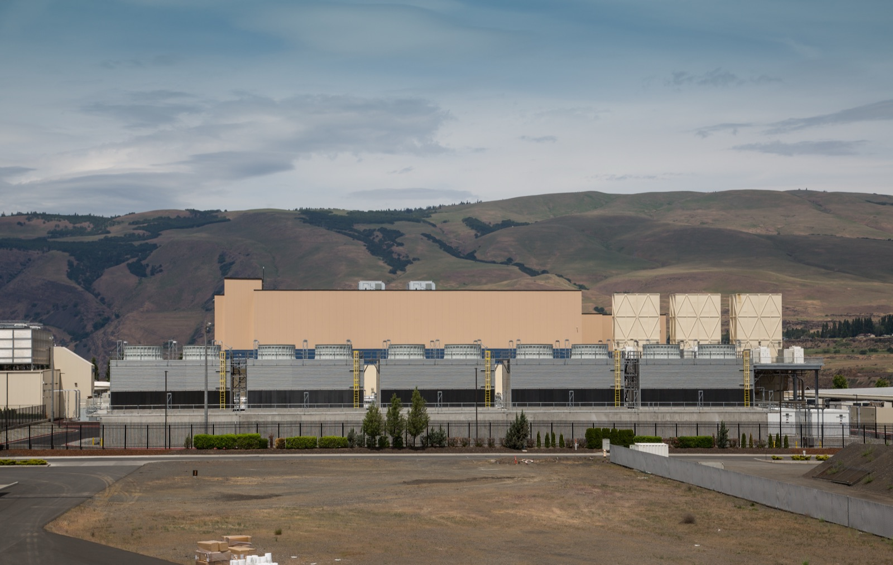
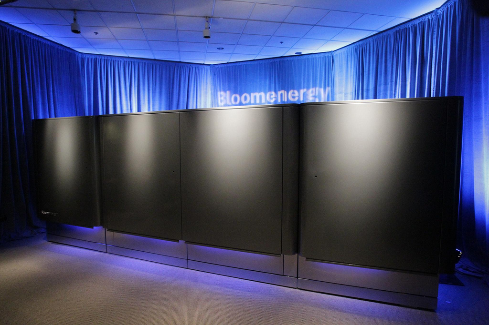

Executive Summary
On September 24, 2026, Oracle sent a force majeure notice to the developer of the large AI data center it has agreed to occupy in New Mexico. Force majeure is a clause written into a contract ahead of time, and it limits what one side owes when circumstances outside its control keep it from performing. The circumstance Oracle named is electricity. This campus is not taking power from the grid outside its fence. It is supposed to make up to 2.45 gigawatts on site in a plant of its own, and the gas pipeline and the air permit that plant depends on are both running behind the dates the contract assumes. This article reads the notice not as one bad week for one company but as a case showing where a delay on the ground travels once a contract picks it up.
What the notice changes is timing rather than amount. If the 2028 start falls through, Oracle can push back the date rent begins by as much as three years. Other costs keep running during that stretch, and the total rent, once payments begin, is exactly what the original lease already set. Nothing is forgiven; it is postponed. The market that moved first was credit, not equity. Roughly 20 banks put $18 billion behind this campus, and once the notice became public that debt was changing hands at 89 to 91 cents on the dollar.
Sections 1 through 4 follow what reporting and the public record hold. Section 5, which carries the event over to the delay risk that has no price yet in the AI services we pay for, is this article's own reading.
Key Numbers
Sources: reporting by TechCrunch, CNBC and the Santa Fe New Mexican (September 24–25, 2026), plus a Reuters analysis. The loan price is a Financial Times figure that several outlets picked up.
2.45GW
Power capacity at Project Jupiter
Four buildings on roughly 1,400 acres. The electricity is to be made on site by fuel cells, and that plant has no permit yet
3 years
Longest the rent can be deferred
If the start slips past 2028, payments begin later. The total does not shrink, and the landlord waits for it
$18 billion
Lent by about 20 banks
A facility with Santander and Jefferies among the lenders. A slipped schedule lands here as real exposure
89–91 cents
Price of that debt after the notice
That is under the $1 of face value. Credit markets put a price on the delay before anyone else did
One Letter, Three Stocks Down the Same Day
The setting is Santa Teresa, in Doña Ana County at the southern edge of New Mexico, near El Paso, Texas and the Mexican border. On roughly 1,400 acres of desert, four buildings adding up to 2.45 gigawatts are going up under the name Project Jupiter. Building it are STACK Infrastructure, owned by Blue Owl Capital, together with BorderPlex Digital Assets. The party that agreed to rent the finished buildings whole is Oracle, named anchor tenant of the campus in January 2026. Much of the compute that runs there is meant for OpenAI, and the campus belongs to Stargate, the buildout Oracle, OpenAI and SoftBank are pursuing together. The developers have put the total investment plan at as much as $165 billion.

On Thursday, September 24, Bloomberg reported first that Oracle had sent this developer a force majeure notice. The claim inside it is that if power commitments are missed and the 2028 start falls through, Oracle will defer rent payments for up to three years. Markets answered quickly. Oracle fell almost 5% early in the session and closed down more than 3%, and Blue Owl Capital, the developer's parent, lost 3.6%. Bloom Energy, which is to supply the campus with fuel cells, dropped about 6%. News touching one clause of a contract pulled down the share price of a company that sells power equipment.
Official statements from both sides point the same direction. Oracle said "Project Jupiter remains on our planned schedule. We are fully committed to New Mexico and confident in our path forward." A spokesman added one more point about what the document is for. "Force-majeure notices are commonplace in developments of this scale and are often used to preserve contractual rights among project partners," he said. "They do not, by themselves, establish a project delay or change delivery expectations." A spokesperson for STACK Infrastructure wrote that "Blue Owl, STACK Infrastructure and Oracle remain fully aligned on Project Jupiter. This notice does not change the financial commitments to this multiyear project."
So this notice is not news that Oracle is walking away. It is not a declaration that the contract is broken, and it is not a signal that the project has collapsed. Oracle pulled one risk-sharing clause, present in the contract from the start, toward its own side. Three stocks still fell the same day. That prices changed when nothing moved except a clause is what shows how much the clause carries.
Oracle Is Locked Into This Lease
This is not a lease the tenant can cancel partway through. Blue Owl put roughly $3 billion of equity into the project, and the contract makes Oracle responsible for the cost of the debt raised to put up the buildings. Capital and borrowing hold each other in place, and there is no exit door for the tenant. So Oracle's remaining option is not to leave but to move time.
What changes if the notice holds? Should the 2028 target fail, the first rent payment can land three years later than the lease intended. Costs other than rent keep going out through that period. And once payments begin, Oracle owes rent for the entire term written into the original lease. The sum the developer collects does not shrink. What shrinks is what that money is worth by the time it arrives.
One more condition attaches here. By Bloomberg's account, the three-year deferral is not settled by the fact that Oracle sent a notice. It takes effect only if Oracle and Blue Owl agree that a force majeure event tied to meeting power commitments did occur. The notice is the document that opens that negotiation, not its conclusion.
Where the burden lands in this structure is visible in how Blue Owl earns. Through the development phase, while the buildings go up, Blue Owl takes a 9% annual return on the equity it committed. Once the buildings are done and the tenant moves in, higher rent begins arriving. If Oracle invokes force majeure and stretches out the development phase, Blue Owl stays longer at the lower return. It collects in the end, just later. The money has not disappeared; the waiting got longer, and somebody pays for that wait.
Doing this job is what a force majeure clause exists for. It decides in advance how to split the burden when one side cannot perform for reasons it could not help. What is new here is not the clause but the fact that the schedule has slipped far enough for somebody to reach for it.
Whether it can be reached for now is itself contested. By the account of the Legal Information Institute at Cornell Law School, force majeure is typically invoked for extraordinary events known as acts of God, such as fires, floods or war. Mariel Nanasi, executive director of the Santa Fe-based New Energy Economy, questions whether it fits here. "I question whether that claim is actually applicable and real in this situation," she said. "It's got to be unforeseeable ... and this is completely foreseeable." Which way that question is answered decides who carries the cost of three years.
The Electricity Is Running Behind the Contract
Under the contract, securing the power for this campus is understood to be Oracle's responsibility, according to sources cited by Reuters. And that power is late. The reason is neither silicon nor capital, but things you bury in the ground and clear on paper.
Where does that electricity come from? This campus does not draw it from an outside grid. Oracle and its partners plan to install a huge array of Bloom Energy fuel cells on the site, produce up to 2.45 gigawatts there, and feed those cells natural gas delivered through a newly built pipeline. Bloom Energy, whose stock slid the day the notice surfaced, is the company supplying the cells for that plant. Neither the plant nor the pipeline has yet been approved.

First the pipeline. Transwestern Pipeline, a subsidiary of the Dallas-based Energy Transfer, is laying the roughly 18-mile Green Chile pipeline. The route has to cross a 0.6-mile stretch of state trust land, and the New Mexico State Land Office has twice rejected the crossing application, arguing that the pipeline would not benefit state lands. A revised route went back in during August, but the date gas starts flowing has moved from September 2026 to February 2027, close to six months. At the federal level the review has advanced. Staff at the Federal Energy Regulatory Commission completed an environmental assessment of the pipeline this month and concluded that approving it would not harm the environment. That is not a final approval, and public comment on the review stays open through October 5.
Second the air permit. The New Mexico Environment Department has not yet issued the air quality permit needed to run the fuel cell plant. The decision deadline stands at November 23, 2026. A public hearing due to start this month sat on hold for weeks because opponents of the project went to court. That litigation is the third item. In suits brought by environmental groups over water and air permits, the New Mexico Supreme Court paused the permitting proceedings and then, in a September 17, 2026 decision, allowed them to continue. Resuming does not mean moving faster. The state has still not named a hearing examiner and has not set a hearing date.
How much all of this has pushed the schedule depends on who is counting. One source cited by Reuters said the power delay is holding the whole project back by close to a year, while other counts put it at more than seven months. Reading it as a range, somewhere between six months and a year, is the accurate way. Earlier this month Oracle issued a request for proposals for 2 gigawatts of renewable energy development in New Mexico, a move toward making up the missing electricity itself.
Locally a different arithmetic is running. Colin Cox, an attorney at the Center for Biological Diversity, noted that New Mexico "has already given over 200 million gallons of our fresh water to construct something that ... appears to be on shaky grounds financially." Maslyn Locke, a senior staff attorney at the New Mexico Environmental Law Center, wrote that "Oracle's debts should not be excused based on the fact that they underestimated community power and opposition to their ill-advised project." Those hoping for jobs and tax revenue and those worried about water and power are split over the same piece of ground.
A Loss Does Not Vanish, It Changes Books
Follow the money tied up in this campus. Late last year a consortium of about 20 banks, Santander and Jefferies among them, agreed to lend $18 billion. After word of the notice got out, that debt traded at 89 to 91 cents on the dollar, a figure the Financial Times reported and other outlets carried. It is close to a dime below par. While the equity market took 3% out in a day, the credit market set its own price on a single question: will this building start earning on time?
The diagram below redraws the same event as a path that money travels. The left column is what happened on the ground, the middle is the sentence in the contract that takes it down, and the right is the set of books where that sentence changes a number.
Mariel Nanasi of New Energy Economy put the situation in a sentence. "Wall Street is saying it with money, and Oracle is saying it in its contracts." The 89 cents attached to the loan and the force majeure written in the notice are one judgment set down in two different grammars.
There is another book with money on it. In tax break agreements with Doña Ana County, the developers committed to bring the first phase of the facility into operation between October and December of this year and to finish the campus and the power plant by the third quarter of 2028. The 2028 deadline the notice aims at comes from here. In return the county is to receive payments in lieu of taxes, flat sums of $12 million a year for 30 years. Precinct 5 County Commissioner Manny Sanchez said Oracle has not notified the county of any change to the schedule. He said he expects the company to keep meeting its commitments to the county and making those payments.
The effect carried past this campus. A Reuters analysis reported that the notice sent a chill through the trillion-dollar market for AI infrastructure financing. Sean McDevitt of Arthur D. Little said "the financing side of the AI buildout is starting to ask much harder questions than the demand side," and Rajat Rana of Quinn Emanuel said these contracts "are so rapidly evolving" that a data center contract from January of this year and one signed today are massively different. The delayed IPO of SB Energy, which is developing a campus in Ohio to serve OpenAI, is being discussed alongside this event.
This one clause does not stop at Project Jupiter, given the size of the lease obligations Oracle is taking on. S&P Global Ratings cut Oracle in July to the lowest rung of investment grade, saying it had underestimated the scale of the company's AI infrastructure investment and the financial consequences that follow. By the S&P estimate El Paso Matters reported, lease commitments Oracle expects to begin between fiscal 2027 and fiscal 2029 run to about $260 billion, most of it data centers. That covers worldwide operations, so it is not the size of Project Jupiter alone. A clause that sets when rent starts sits on top of a pile of obligations that large.
Treating this as an exception is difficult too. In the second quarter of 2026, at least 45 data center projects worth $68 billion faced opposition from community groups. Some in the industry argue that instead of dropping a multi-gigawatt single campus onto contested farmland or open desert, the safer approach is building at small and medium scale, spread across industrial land where power already runs.
Why Pebblous Is Watching This Notice
From here the article rereads the event through the work we do. A plan to grow a model gets written in parameter counts and GPU counts, but the ground that plan actually stands on is a pipeline route review and an air permit deadline. What Project Jupiter shows is that an item absent from the plan document sets the schedule.
5.1The Data a Roadmap Never Looks At Moves the Roadmap
Talk about AI-Ready Data usually starts with the condition of the data you will train on. Is the format consistent, are the labels right, is the origin still traceable. This event says one more kind sits outside that list: a position in the grid interconnection queue, a decision deadline in a permit review, the stage a lawsuit has reached. None of these values show up on a model scorecard, and each of them decides directly whether a plan is feasible. A single date, November 23, 2026, governing the next quarter of a 2.45-gigawatt plan is the example in front of us.
Treat data quality as the accuracy of values alone and none of this enters the scope of management. Recording when a value becomes final, and what stays undecided until then, is what lets anyone trace where a plan came apart once it slips.
5.2The Price Banks Set Is Not on the Service Bill
The most honest number in this event is not the share price but 89 cents. Banks have already put a price on the chance that this campus does not start earning on time. At the other end, the AI service bill many of us pay every month shows no sign of that risk. Money that someone receives later because a delay ran long does not disappear, and it gets charged somewhere. Nobody has yet disclosed which line it will be charged on.
So anyone renting AI infrastructure now has more questions to ask. Which region and which campus is our inference capacity riding on? How much of that campus's power schedule and permitting status is disclosed to us? When the schedule slips, which clause in our own contract moves, and which direction does the burden travel? Where the contract holds no answer, that blank is the risk that ends up ours.
Thank you for reading this far. The facts this article cites can be checked in reporting by TechCrunch, CNBC and the Santa Fe New Mexican, and in the Reuters analysis. Which building is your company's AI service running in? If the electricity there arrives late, tell us which line you think changes.
References
Sources 1–3 are the first-day reporting on the notice; source 4 is a syndicated copy of the Bloomberg story that broke it. Sources 5–7 fill in the loan-price, market-ripple, and local-permitting background, and source 8 confirms the legal definition of a force majeure clause.
First-Day Reporting
- 1.TechCrunch (2026-09-24). "Oracle sends force majeure notice on its New Mexico Stargate data center." techcrunch.com
- 2.CNBC (2026-09-24). "Oracle sends 'force majeure' notice about data center project — stock drops 3%." cnbc.com
- 3.Santa Fe New Mexican (2026-09-24). "Oracle sends force majeure notice to Project Jupiter developers to protect itself from liability." santafenewmexican.com
- 4.Bloomberg (2026-09-24). "Oracle triggers 'force majeure' on New Mexico data centre project." Syndicated via BNN Bloomberg. bnnbloomberg.ca
Analysis & Local Reporting
- 5.Reuters (2026-09-25). "Analysis-Oracle, Blue Owl project delay sends ripples through AI financing, sources say." Yahoo Finance. finance.yahoo.com
- 6.Financial Times (2026-09-25). "Oracle's $18B Project Jupiter Loan Is Flashing a Warning From the Credit Market." Source of the 89-to-91-cent loan price. The original is paywalled; this link is a public re-post via CryptoRank. cryptorank.io
- 7.El Paso Matters (2026-09-24). "Oracle could defer Project Jupiter rent payments over power supply delays." Local reporting on S&P Global Ratings' downgrade of Oracle and its lease-commitment estimate. elpasomatters.org
Reference
- 8.Cornell Law School Legal Information Institute. "Force majeure." Wex Legal Dictionary. law.cornell.edu